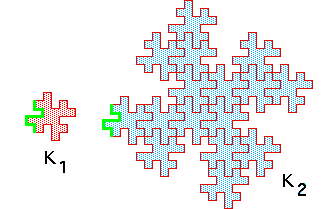

| To illustrate the area-perimeter relationship for regions with fractal boundaries, we use two copies, K1 and K2, of the quadratic Koch island. |
| Here we see both, with perimeters measured at the same scale. |
| Certainly, the limiting shapes (not pictured - polygonal approximations are shown here) are similar to one another. |
| We see K2 consists of 16 copies of K1, so |
| A2 = 16A1 |
|  |
| To measure the perimeter at this scale, note the perimeter of K1 is made of four copies of the left side and the perimeter of K2 consists of 32 copies of the left side of K1. Consequently, |
| P2 = 32/4 P1 = 8 P1 |
| Then the area-perimeter relationship becomes |
| 8 = P2/P1 = (A2/A1)d/2 = 16d/2 |
| giving d = 3/2, agreeing with our earlier calculation. |
Return to the area-perimeter relation.